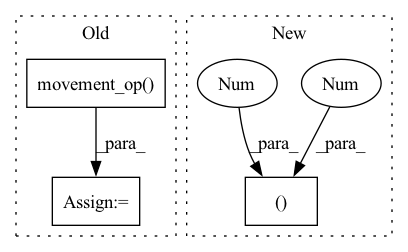

Pattern ID :24235
Before Change
grad_output_dw = ctx.movement_op(MovementOps.RESHAPE, grad_output, (C.bs * C.groups * C.rcout, 1, C.oy, C.ox))
Cdw = get_conv_args(xdw.shape, grad_output_dw.shape, padding=(C.py, C.px), stride=(C.dy, C.dx), dilation=(C.ys, C.xs), groups=C.bs*C.groups)
grad_weight = ctx.processing_op(ProcessingOps.CONV, xdw, grad_output_dw, (Cdw.bs, Cdw.cout, Cdw.oy, Cdw.ox), Cdw)
grad_weight = ctx.movement_op( MovementOps.RESHAPE, grad_weight, (C.cin, C.bs, C.groups, C.rcout, Cdw.oy, Cdw.ox))
grad_weight = ctx.movement_op(MovementOps.PERMUTE, grad_weight, (1,2,3,0,4,5))
grad_weight = ctx.reduce_op(ReduceOps.SUM, grad_weight, (1, *grad_weight.shape[1:]))
grad_weight = ctx.movement_op(MovementOps.RESHAPE, grad_weight, (C.groups*C.rcout, C.cin, Cdw.oy, Cdw.ox))
dw = ctx.movement_op(MovementOps.SLICE, grad_weight, ((0, grad_weight.shape[0]), (0, grad_weight.shape[1]), (0, w.shape[2]), (0, w.shape[3])))
return dx, dwAfter Change
xdw = ctx.movement_op(MovementOps.RESHAPE, x, (C.bs, C.groups, C.cin, C.iy, C.ix))
xdw = ctx.movement_op(MovementOps.PERMUTE, xdw, (2,1,0,3,4))
xdw = ctx.movement_op(MovementOps.RESHAPE, xdw, (C.cin, C.groups*C.bs, C.iy, C.ix))
grad_output_dw = ctx.movement_op(MovementOps.PERMUTE, grad_output, (1,0,2,3 ))
grad_output_dw = ctx.movement_op(MovementOps.RESHAPE, grad_output_dw, (C.groups * C.rcout, C.bs, C.oy, C.ox))
Cdw = get_conv_args(xdw.shape, grad_output_dw.shape, padding=(C.py, C.px), stride=(C.dy, C.dx), dilation=(C.ys, C.xs), groups=C.groups)
grad_weight = ctx.processing_op(ProcessingOps.CONV, xdw, grad_output_dw, (Cdw.bs, Cdw.cout, Cdw.oy, Cdw.ox), Cdw)In pattern: SUPERPATTERN
Frequency: 3
Non-data size: 3
Instances Fragment ID: 75286256
Project Name: geohot/tinygrad
Commit Name: 89db797e5731592096cf4188895bcf5a7309d988
Time: 2022-06-16
Author: geohot@gmail.com
File Name: tinygrad/mlops.py
M Class Name: Conv2D
N Class Name: Conv2D
M Method Name: backward(2)
N Method Name: backward(2)
M Parent Class: Function
N Parent Class: Function
M File Name: tinygrad/mlops.py
N File Name: tinygrad/mlops.py
M Start Line: 195
M End Line: 203
N Start Line: 193
N End Line: 201
Before Change
xdw = ctx.movement_op(MovementOps.RESHAPE, x, (1, C.bs * C.groups * C.cin, C.iy, C.ix))
grad_output_dw = ctx.movement_op(MovementOps.RESHAPE, grad_output, (C.bs * C.groups, 1, C.rcout, C.oy, C.ox))
// this expand is slow
grad_output_dw = ctx.movement_op( MovementOps.EXPAND, grad_output_dw, (C.bs * C.groups, C.cin, C.rcout, C.oy, C.ox))
grad_output_dw = ctx.movement_op(MovementOps.RESHAPE, grad_output_dw, (C.bs * C.groups * C.cin * C.rcout, 1, C.oy, C.ox))
// padding is the same, stride and dilation are flipped
Cdw = get_conv_args(xdw.shape, grad_output_dw.shape, padding=(C.py, C.px), stride=(C.dy, C.dx), dilation=(C.ys, C.xs), groups=C.bs*C.groups*C.cin)
grad_weight = ctx.processing_op(ProcessingOps.CONV, xdw, grad_output_dw, (Cdw.bs, Cdw.cout, Cdw.oy, Cdw.ox), Cdw)After Change
// TODO: there has to be a way to do this without the expand/reduce for at least matmul
// since it"s ctx.op.matmul(input, grad_output, ctx.buffer(weight.shape), transpose_a=True)
xdw = ctx.movement_op(MovementOps.RESHAPE, x, (C.bs*C.groups, C.cin, C.iy, C.ix))
xdw = ctx.movement_op(MovementOps.PERMUTE, xdw, (1 ,0,2,3 ))
grad_output_dw = ctx.movement_op(MovementOps.RESHAPE, grad_output, (C.bs * C.groups * C.rcout, 1, C.oy, C.ox))
Cdw = get_conv_args(xdw.shape, grad_output_dw.shape, padding=(C.py, C.px), stride=(C.dy, C.dx), dilation=(C.ys, C.xs), groups=C.bs*C.groups)
grad_weight = ctx.processing_op(ProcessingOps.CONV, xdw, grad_output_dw, (Cdw.bs, Cdw.cout, Cdw.oy, Cdw.ox), Cdw) Fragment ID: 75286232
Project Name: geohot/tinygrad
Commit Name: 38d6cfec2a83ed522ca2f425af817b089391604f
Time: 2022-06-16
Author: geohot@gmail.com
File Name: tinygrad/mlops.py
M Class Name: Conv2D
N Class Name: Conv2D
M Method Name: backward(2)
N Method Name: backward(2)
M Parent Class: Function
N Parent Class: Function
M File Name: tinygrad/mlops.py
N File Name: tinygrad/mlops.py
M Start Line: 195
M End Line: 207
N Start Line: 195
N End Line: 201
Before Change
xt = xt.movement_op(MovementOps.SLICE, ((0,xt.shape[0]), (0,xt.shape[1]), (0,xt.shape[2]), (0,C.sy), (0,xt.shape[4]), (0,C.sx)))
xt = xt.movement_op(MovementOps.RESHAPE, (xt.shape[0], xt.shape[1], xt.shape[2]*C.sy, xt.shape[4]*C.sx))
wt = w.movement_op(MovementOps.RESHAPE, (C.groups, C.rcout, C.cin, C.H, C.W))
wt = wt.movement_op( MovementOps.FLIP, (3, 4))
wt = wt.movement_op(MovementOps.PERMUTE, (0, 2, 1, 3, 4))
wt = wt.movement_op(MovementOps.RESHAPE, (C.groups*C.cin, C.rcout, C.H, C.W))
py, px = (C.H-1)*C.dy - C.py, (C.W-1)*C.dx - C.px
py_ = x.shape[2] - xt.shape[2] + C.pyAfter Change
xt = xt.movement_op(MovementOps.SLICE, ((0,xt.shape[0]), (0,xt.shape[1]), (0,xt.shape[2]), (0,C.sy), (0,xt.shape[4]), (0,C.sx)))
xt = xt.movement_op(MovementOps.RESHAPE, (xt.shape[0], xt.shape[1], xt.shape[2]*C.sy, xt.shape[4]*C.sx))
wt = w.movement_op(MovementOps.RESHAPE, (C.groups, C.rcout, C.cin, C.H, C.W)).movement_op(MovementOps.PERMUTE, (0, 2, 1, 3, 4))
wt = wt.movement_op(MovementOps.RESHAPE, (C.groups*C.cin, C.rcout, C.H, C.W)).movement_op(MovementOps.FLIP, (2 , 3 ))
py, px = (C.H-1)*C.dy - C.py, (C.W-1)*C.dx - C.px
py_ = x.shape[2] - xt.shape[2] + C.py
px_ = x.shape[3] - xt.shape[3] + C.px Fragment ID: 75286228
Project Name: geohot/tinygrad
Commit Name: 02cd8510cb09bb739861d938b8ee572866f2ad3d
Time: 2022-07-03
Author: geohot@gmail.com
File Name: tinygrad/mlops.py
M Class Name: Conv2D
N Class Name: Conv2D
M Method Name: backward(2)
N Method Name: backward(2)
M Parent Class: Function
N Parent Class: Function
M File Name: tinygrad/mlops.py
N File Name: tinygrad/mlops.py
M Start Line: 171
M End Line: 194
N Start Line: 179
N End Line: 188